유통관리사-2급 (2016-11-13 기출문제)
1과목: 유통물류일반
1. 유통업체들의 경로파워가 강해진 이유로 옳지 않은 것은?
- 유통업체들이 전국상표(national brand)를 집중 육성하였다.
- 유통업체들이 대형화되었다.
- 유통업체들은 정보기술 발달 덕분에 재고관리, 주문단계에서 운영효율성이 증가하여 고객 및 공급업체 관계에서 주도권을 쥐게 되었다.
- 소비자들이 일괄 구매(one-stop shopping)를 선호함에 따라 대형 유통매장이 전국적으로 확산될 수 있었다.
- 유통업체들의 다점포화가 가속화되었다.
(정답률: 69%)

2. 다음 유통센터에서 도입한 물류방식을 활용하기에 적절하지 않은 경우는?
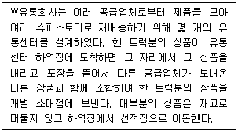
- 재고가 입하될 때 보낼 곳을 알고 있는 경우
- 재고가 시간에 민감한 경우
- 배송처가 재고를 즉시 받을 준비가 되어 있는 경우
- 유통센터의 공간이 거의 포화상태인 경우
- 재고 라벨이 붙지 않은 상태로 유통센터의 도크에 도착한 경우
(정답률: 53%)
3. 동대문이나 남대문의 의류도매상가, 경동 한약재 도매시장 처럼 한 장소에 몰려있는 중간상에게서 특징적으로 볼 수 있는 역할은?
- 생산시점과 소비시점 일치
- 상품구색상의 불일치 해소
- 생산단위와 구매단위 일치
- 장소적 불일치의 증가
- 유통경로 상 거래수의 증가
(정답률: 58%)
4. 제조업자나 생산자로부터 구매하여 판매 시까지 취급상품의 소유권을 가지고, 독립적으로 대부분의 도매기능을 수행하는 도매상의 유형에 가장 가까운 것은?
- 상인도매상
- 대리점
- 브로커
- 판매지점(sales branch)
- 판매사무소(sales office)
(정답률: 81%)
5. 리더십 이론 중 블레이크와 무튼(R. R. Blake & J. Mouton)의 관리격자 모형에 대한 설명으로 옳지 않은 것은?
- 리더십을 일에 대한 관심과 인간에 대한 관심에 따라 구분하였다.
- 인간중심형의 경우 분위기는 좋지만 조직목표달성에는 효과적이지 않을 수 있다.
- 타협형의 경우 치우치지 않고 균형을 이루기에 팀제도하에서 바람직하다.
- 과업중심형의 경우 업무성과에 대한 관심만 높기에 조직 분위기가 경직될 수도 있다.
- 무관심형의 경우 자신의 자리만 보존하려는 무사안일형 리더이다.
(정답률: 50%)
6. 공급사슬에서 일어나는 채찍효과(bullwhip effect)를 해결하기 위한 방안과 가장 거리가 먼 것은?
- 빈번한 가격할인을 자제하고 항시저가정책을 실시한다.
- 거래선에 의한 재고관리(VMI, Vendor Managed Inventory)를 실시한다.
- EDI(Electronic Data Interchange)를 활용하여 공급사슬 상 필요한 정보를 공유한다.
- 공급사슬의 각 단계마다 독립적으로 수요예측을 한다.
- CPFR(Collaborative Planning, Forecasting, Replenishment)을 사용한다.
(정답률: 62%)
7. 디자인, 생산, 마케팅 등 기능에 따라 조직을 세분화하는 '부문화'의 경우 발생하는 단점으로 옳지 않은 것은?
- 서로 다른 부서들 사이의 의사소통이 부족할 수 있다.
- 부문별 비용은 증가할 수 있으나 전체적인 비용은 감소될 수 있다.
- 종업원 개개인이 조직 전체의 목표보다 소속부서의 목표만 확인할 수 있다.
- 외부 변화에 대한 대응이 늦다.
- 같은 부서의 사람들은 같은 생각을 하게 되는 경향이 있어 창의성이 부족해질 수 있다.
(정답률: 51%)
8. 컨테이너(container)에 대한 내용으로 옳은 것은?
- TEU는 FEU 길이의 2배이다.
- 냉동 컨테이너(reefer container)는 육류, 과일, 야채 등과 같이 보냉을 필요로 하는 화물을 수송하기 위한 컨테이너이다.
- 드라이 컨테이너(dry container)는 중량물이나 장척물, 기계부품 등을 수송하기 위해 컨테이너 상부에서 적입, 적출할 수 있도록 개방되어 있는 컨테이너이다.
- 펜 컨테이너(pen container)는 펜, 연필, 문구류 등 학용품을 전문적으로 운송하기 위한 컨테이너이다.
- 오픈 탑 컨테이너(open top container)는 유류, 주류 등을 수송하기 위한 컨테이너이다.
(정답률: 65%)
9. 3자물류에 대한 설명으로 옳은 것을 모두 고르면?
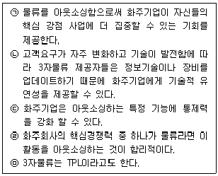
- ㉠, ㉡, ㉤
- ㉠, ㉢, ㉤
- ㉢, ㉣
- ㉠, ㉡, ㉢
- ㉠, ㉡, ㉢, ㉣, ㉤
(정답률: 57%)
10. 제조업체에 의해 개발, 생산, 프로모션 등에 관한 활동이 이뤄지고 여러 유통업체에 의해 판매되는 상품을 무엇이라고 하는가?
- 개별상표(Private Brand) 상품
- 전국상표(National Brand) 상품
- 무상표(Generic Brand) 상품
- 점포상표(Store Brand) 상품
- 경쟁상표(Fighting Brand) 상품
(정답률: 66%)
11. 포장에 대한 내용으로 옳지 않은 것은?
- 상업포장은 상품의 얼굴로서 판촉기능을 담당하나 호화포장, 과잉포장, 과대포장 등은 소비자 불만을 초래하기도 한다.
- 공업포장은 물류분야에 속하며 내용상품의 보호는 물론 취급 편리성에 대한 기능도 요구된다.
- 상업포장은 상품의 수송, 보관, 하역 등에서 물리적 요인(진동, 충격 등)과 화학적 요인(온도, 습도, 부패 등)으로 인해 물품이 변질되는 것을 방지해야 한다.
- 파손과 감모율을 줄이기 위해 과대포장을 하면 상품 파손율을 줄일 수 있으나 포장비가 높아지므로 제품설계단계부터 이런 요인들을 검토해야 한다.
- 포장은 수송수단, 보관설비와의 유기성, 점두전시, 폐기, 재활용 등의 측면과도 폭넓게 관계된다.
(정답률: 46%)
12. 국경에 따라 시장을 구분하는 방식에서 탈피해, 전 세계를 하나의 시장으로 단일화하는 글로벌경영이 증가하는 이유로 가장 옳지 않은 것은?
- 규모의 경제를 실현하기 위해
- 무역장벽이 상대적으로 낮아졌기 때문에
- 고객 수요가 동질화되는 경향이 있기 때문에
- 막대한 제품개발 비용의 회수를 위해
- 불확실한 위험을 집중시키기 위해
(정답률: 54%)
13. 물적 흐름과정에 의한 분류인 영역별 물류비에 해당하지 않는 것은?
- 조달물류비
- 사내물류비
- 판매물류비
- 역물류비
- 물류정보관리비
(정답률: 61%)
14. 유통산업발전법 제24조 1항 유통관리사의 직무에 해당하지 않는 것은?
- 유통경영·관리 기법의 향상
- 유통경영·관리와 관련한 계획·조사·연구
- 유통경영·관리와 관련한 허가·승인
- 유통경영·관리와 관련한 진단·평가
- 유통경영·관리와 관련한 상담·자문
(정답률: 71%)
15. 두 사람의 대화와 관련 있는 소매업 변천과정 이론은?
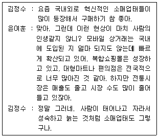
- 소매업 변증법적 이론
- 소매 수레바퀴 이론
- 소매 진공지대 이론
- 소매 수명주기 이론
- 소매 아코디언 이론
(정답률: 70%)
16. ○○백화점의 산업구조분석 중 옳게 기술한 것을 모두 고르면?
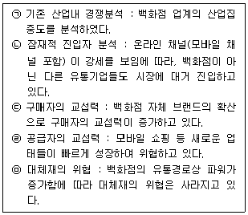
- ㉠, ㉡
- ㉠, ㉢
- ㉡, ㉢
- ㉢, ㉣
- ㉣, ㉤
(정답률: 59%)
17. 괄호 안에 들어갈 단어를 순서대로 올바르게 나열한 것은?
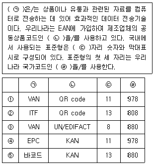
- ①
- ②
- ③
- ④
- ⑤
(정답률: 74%)
18. 기업의 종업원 동기부여 이론과 그 설명으로 옳은 것은?
- 맥그리거(D. McGregor)의 X이론 : 관리적 관점에서 종업원의 직무를 엄격히 통제하고, 금전적 보상체계를 강화해야 한다.
- 맥그리거(D. McGregor)의 Y이론 : 종업원은 안전을 원하고 변화에 저항적이다.
- 오우치(W. Ouchi)의 Z이론 : 종신고용, 최고경영자의 단독 의사결정, 빠른 성과평가가 중요하다.
- 드러커(P. Drucker)의 목표에 의한 관리 : 최고경영진이 직접 목표를 설정·지시하고 직원들의 성과를 평가한다.
- 브룸(V. Vroom)의 강화이론 : 종업원이 승진을 무척 원하고, 중간관리층이 성과를 승진에 반영할 가능성이 크며 자기 자신의 능력에 대한 자신이 있다면, 동기 수준은 높게 나타난다.
(정답률: 35%)
19. 단위적재시스템(Unit Load System)의 단점에 해당하는 것은?
- 하역인력이 늘어난다.
- 넓은 통로를 갖춘 큰 창고가 필요하다.
- 작업의 표준화, 규격화가 어렵다.
- 검수가 용이하지 않다.
- 하역시간이 길어진다.
(정답률: 63%)
20. 깊이 있는 구색을 가진 한정된 품목을 저가격 ㆍ 대량으로 판매하는 업태로 옳은 것은?
- 수퍼센터(super center)
- 창고형도소매업(membership warehouse club)
- 카테고리킬러(category killer)
- 파워센터(power center)
- 할인점(discount store)
(정답률: 71%)
21. 수요예측에 사용하는 지수평활법(Exponential Smoothing) 에 대한 설명으로 옳지 않은 것은?
- 지수평활법은 지수평활상수를 활용하여 수요예측을 한다.
- 예측오차에 대해 예측치가 조정되는 순발력은 지수평활상수 α에 의해 결정된다.
- 일부 컴퓨터 패키지 프로그램은 예측오차가 허용할 수 없을 정도로 큰 경우에는 지수평활상수를 자동으로 조정하는 기능을 갖고 있다.
- 지수평활법은 계산이 복잡하고 가중치 체계인 지수평활상수의 변경이 어렵다.
- 다음기 예측치 = 전기의 예측치 +α(전기의 실제치 - 전기의 예측치)
(정답률: 67%)
22. 유통을 크게 유통활동과 유통조성활동으로 구분할 때 그 성격이 다른 하나는?
- 금융활동
- 보험활동
- 규격화활동
- 운송활동
- 표준화활동
(정답률: 62%)
23. 기업 부문에 따른 업무에 관련된 내용으로 옳지 않은 것은?
- 생산부문은 품질, 수량, 인도일, 제조기간 등 구매활동에 필요한 정보를 구매부문에 제공하여 최적의 구매를 할 수 있도록 한다.
- 구매부문은 기술(설계)부문의 요구에 따라 자재와 설비를 구입하고 기술을 서비스하며, 새로운 자재나 설비상황 보고 등으로 지원한다.
- 기술(설계)부문은 구매부문에게 구입품의 표준, 적정품질에 대해 권고한다.
- 경리부문에서 관리하는 자금 상황에 따라 지불조건이 좌우될 수 있으며 그 지불조건에 따라 구입가격에도 영향을 줄 수 있다.
- 조달기간 및 제품원가는 운송부문에서 관리하는 운송비에 영향을 주지 않는다.
(정답률: 76%)
24. 다음 제시하는 표를 토대로 분석한 내용이다. 옳은 것은?
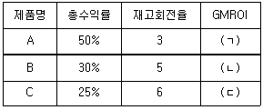
- GMROI는 재고투자 매출총수익률로서 소매공간활용의 밀도를 평가하는 수단이 된다.
- (ㄱ), (ㄴ), (ㄷ) 중 (ㄱ)의 숫자가 가장 크다.
- (ㄱ), (ㄴ), (ㄷ) 중 (ㄴ)의 숫자가 가장 작다.
- (ㄴ)에 들어갈 숫자는 6이다.
- (ㄱ), (ㄴ), (ㄷ)에 들어갈 숫자는 모두 동일하다.
(정답률: 55%)
25. 소매점의 안정성을 측정하는 경영지표에 해당하지 않는 것은?
- 자기자본비율
- 유동비율
- 매출원가 대 매출액비율
- 매입채무 대 재고자산비율
- 순운전자본 대 총자본비율
(정답률: 35%)
2과목: 상권분석
26. 점포방문동기는 제품구매(buying) 동기를 제외하면 개인적(personal) 동기와 사회적(social) 동기로 분류될 수 있다. 다음 중 사회적 동기에 해당하는 것은?
- 지위와 권위
- 기분전환
- 자기만족
- 새로운 추세에 대한 학습
- 감각적 자극
(정답률: 65%)
27. 다음은 어떤 상권분석 기법에 대한 설명인가?
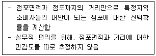
- Huff모델
- 수정Huff모델
- MCI모델
- MNL모델
- 유사점포법
(정답률: 33%)
28. 점포를 도시형점포, 교외형점포, 인스토어형점포로 구분할 때, 인스토어형점포의 고객유도시설에 일반적으로 해당하지 않는 것은?
- 지하철역
- 주 출입구
- 주차장 출입구
- 에스컬레이터
- 엘리베이터
(정답률: 52%)
29. 점포의 경쟁상황을 분석할 때는 경쟁의 다양한 측면을 다루어야 한다. 대도시의 상권을 도심, 부도심, 지역중심, 지구중심 등으로 분류하고 각 수준별 및 수준간 경쟁관계의 영향을 함께 고려하는 것은?
- 업태별·업태내 경쟁구조 분석
- 위계별 경쟁구조 분석
- 절대위치별 경쟁구조 분석
- 잠재 경쟁구조 분석
- 경쟁·보완관계 분석
(정답률: 56%)
30. 크리스탈러(Christaller)의 중심지이론을 설명하기 위해 사용되는 개념으로 옳지 않은 것은?
- 최대도달거리
- 최대수요충족거리
- 육각형 형태의 배후지
- 초과이윤공간
- 상업중심지
(정답률: 37%)
31. 신규점포의 개설과정에서 소매점포의 일반적인 전략수립과정을 가장 올바르게 나열한 것은?
- 점포계획→입지선정→상권분석→소매믹스설계
- 점포계획→상권분석→입지선정→소매믹스설계
- 상권분석→입지선정→점포계획→소매믹스설계
- 상권분석→점포계획→입지선정→소매믹스설계
- 입지선정→상권분석→점포계획→소매믹스설계
(정답률: 50%)
32. 도시 공간구조의 변화가 발생하는 일반적인 도심재생과정을 순서대로 나열한 것은? (단, 법률 등에 의한 인위적 개입을 받지 않는다고 가정함)
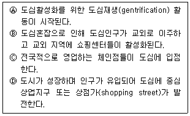
- Ⓓ→Ⓑ→Ⓐ→Ⓒ
- Ⓐ→Ⓒ→Ⓓ→Ⓑ
- Ⓑ→Ⓓ→Ⓒ→Ⓐ
- Ⓑ→Ⓒ→Ⓐ→Ⓓ
- Ⓒ→Ⓐ→Ⓑ→Ⓓ
(정답률: 28%)
33. 유통산업발전법에 의거한 소매점포의 개설 및 입지에 관한 내용으로 옳지 않은 것은?
- 대규모점포를 개설하려는 자는 영업을 시작하기 전에 특별자치시장·시장·군수·구청장에게 등록하여야 한다.
- 준대규모점포를 개설하려는 자는 영업을 시작하기 전에 특별자치시장·시장·군수·구청장에게 등록하여야 한다.
- 전통상업보존구역에 준대규모점포를 개설하려는 자는 영업을 시작하기 전에 상권영향평가서 및 지역협력 계획서를 첨부하여 등록하여야 한다.
- 대규모점포등의 위치가 전통상업보존구역에 있을 때에는 등록을 제한할 수 있다.
- 대규모점포등의 위치가 전통상업보존구역에 있을 때에는 등록에 조건을 붙일 수 있다.
(정답률: 50%)
34. 상권의 계층적 구조에 따라 국내시장에서 영업하는 도매상을 전국도매상, 지역도매상, 지방도매상, 산지도매상으로 구분할 수 있다. 이 구조 사이의 관계에 대한 내용으로 옳지 않은 것은?
- 도매상 사이의 거래 고리는 산지도매상 (→) 전국도매상 (→) 지역도매상 또는 지방도매상의 형태를 가진다.
- 대부분의 전국도매상은 원도매상 또는 중계도매상이다.
- 대부분의 지역도매상은 분산도매상이다.
- 대부분의 지방도매상은 분산도매상이다.
- 상품의 생산지가 집중될수록 산지도매상과 전국도매상 사이의 직거래 비중이 높아진다.
(정답률: 50%)
35. 상권분석의 직접적 필요성에 대한 설명으로 옳지 않은 것은?
- 구체적인 입지계획을 수립하기 위해
- 잠재수요를 파악하기 위해
- 고객에 대한 이해를 바탕으로 보다 표적화된 구색과 판매촉진전략을 수립하기 위해
- 점포의 접근성과 가시성을 높이기 위해
- 기존 점포들과의 차별화 포인트를 찾아내기 위해
(정답률: 51%)
36. 주변에 인접한 점포가 없는 큰 길가에 위치한 자유입지를 '고립된 점포입지' 라 한다. '고립된 점포입지'에 관한 내용으로 옳지 않은 것은?
- 이 입지에 대형점포를 개설하면 소비자의 일괄구매(one-stop shopping)를 가능하게 할 수 있다.
- 주변에 빈 공간을 확보할 수 있어 주차가 용이하다.
- 노출이 잘 되므로 개점 초기에 소비자를 점포 내로 유인하기가 쉽다.
- 토지 및 건물의 가격이 상대적으로 싸다.
- 비교구매를 원하는 소비자에게는 매력적이지 않다.
(정답률: 60%)
37. 상권과 상품유형의 관련성에 대한 내용으로 옳지 않은 것은?
- 편의품의 경우 소규모 점포의 상권 범위는 대개 도보로 5분 정도의 거리 범위 내라고 볼 수 있다.
- 선매품의 경우 승용차와 대중교통을 이용한 접근성이 상권범위를 결정하는 영향요인이 되기도 한다.
- 일상의 편의품을 취급하는 경우 임대료와 지가가 높지 않은 곳에 입지하여야 한다.
- 선매품의 경우 소비자가 이미 충분히 탐색하였으므로 공간적 편리를 주기 위해 취급하는 점포의 숫자가 최소인 곳이 좋다.
- 전문품의 경우 브랜드에 대한 애호도가 강하여 상권범위는 도시 전체로 넓어질 수 있다.
(정답률: 69%)
38. 쇼핑센터와 같은 대형 상업시설의 테넌트(tenant)관리와 관련된 설명으로 옳지 않은 것은?
- 테넌트(tenant)는 상업시설의 일정한 공간을 임대하는 계약을 체결하고 해당 상업시설에 입점하여 영업을 하는 임차인을 일컫는 말이다.
- 테넌트 믹스(tenant mix)를 통해 상업시설의 머천다이징 정책을 실현하기 위해서는 시설내 테넌트간에 끊임없는 경쟁을 유발해야 한다.
- 앵커 테넌트(anchor tenant)는 상업시설 전체의 성격을 결정짓는 요소로 작용하며 해당 상업시설로 많은 유동인구를 발생시키기도 한다.
- 앵커 테넌트(anchor tenant)는 핵점포(key tenant) 라고도 하며 백화점, 할인점, 대형서점 등 해당 상업시설의 가치를 높여주는 역할을 한다.
- 마그넷 스토어(magnet store)는 쇼핑센터의 이미지를 높이고 쇼핑센터의 회유성을 높이는 점포를 말한다.
(정답률: 49%)
39. 시장의 매력도를 분석할 때 활용하는 개념들과 관련된 설명으로 옳지 않은 것은?
- 소매포화지수(IRS)는 한 지역내 특정 소매업태에 대한 수요를 매장 면적의 합으로 나누어 계산한다.
- 소매포화지수(IRS)는 공급에 대한 수요수준을 나타내며 지수의 값이 클수록 신규점포 개설의 매력도가 높다는 것을 의미한다.
- 시장확장잠재력(MEP)은 지역의 가구당(혹은 1인당) 실제 지출액을 예상지출액과 비교하여 계산한다.
- 시장확장잠재력(MEP)의 값이 크면 수요의 증가 가능성이 높음을 의미한다.
- 소매포화지수(IRS)는 소비자들이 거주지역 밖의 다른 지역에서 쇼핑(outshopping)하는 상황을 반영한 것이다.
(정답률: 59%)
40. 귀금속상점이나 떡볶이 가게들이 한 곳에 몰려 있어 더 큰 집객력을 갖는 경우는 다음 중 어느 입지원칙이 적용된 것인가?
- 접근가능성원칙
- 동반유인원칙
- 보충가능성의 원칙
- 점포밀집원칙
- 고객차단원칙
(정답률: 49%)
41. 어느 지역의 소비자가 이용할 수 있는 마트가 아래와 같이 A, B, C의 3개가 있다. Huff모델을 적용할 때, 그 소비자의 이용확률이 가장 큰 마트와 그 이용확률은? (단, 마트면적에 대한 민감도는 3, 거주자의 거리에 대한 민감도는 2로 가정한다.)
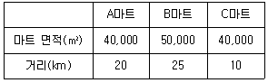
- A 마트, 46%
- B 마트, 51%
- B 마트, 46%
- C 마트, 64%
- C 마트, 81%
(정답률: 46%)
42. 특정지역 상권의 전반적인 수요를 평가하는 도구로 활용되는 구매력지수(BPI)에 대한 설명으로 옳지 않은 것은?
- 지역상권 수요에 영향을 미치는 핵심변수를 선정하고, 이에 일정한 가중치를 부여하여 지수화한 것을 의미한다.
- 전체 인구에서 해당 지역 인구가 차지하는 비율이 반영된다.
- 전체 매장면적에서 해당 지역의 매장면적이 차지하는 비율이 반영된다.
- 전체 가처분소득(또는 유효소득)에서 해당 지역의 가처분소득(또는 유효소득)이 차지하는 비율이 반영된다.
- 전체 소매매출에서 해당 지역의 소매매출이 차지하는 비율이 반영된다.
(정답률: 54%)
43. 상권분석에서 활용하는 조사기법 중에서 조사대상과 조사장소가 점두조사법과 가장 유사한 것은?
- 가정방문조사법
- 지역할당조사법
- 고객점표법
- 내점객조사법
- 편의추출조사법
(정답률: 58%)
44. 상가임대차 과정에서 다루게 되는 권리금을 산정할 때 근거가 되는 유무형의 재산적 가치에 해당하지 않는 것은?
- 영업시설·비품
- 거래처
- 신용
- 상가건물의 위치
- 임대료 지불수단
(정답률: 46%)
45. 레일리(Reilly) 법칙을 이용하여, C지점의 구매력이 A도시와 B도시에 흡인되는 비율을 구하면?
- 4:1
- 1:4
- 16:1
- 1:16
- 1:1
(정답률: 50%)
3과목: 유통마케팅
46. CRM의 도입 배경에 대한 설명으로 가장 옳은 것은?
- 고객 데이터를 통해서 계산원의 부정을 방지하기 위한 것이다.
- 고객과의 지속적 관계를 발전시켜 생애가치를 극대화하려는 것이다.
- 상품계획 시 철수상품과 신규취급 상품을 결정하는데 도움을 주려는 것이다.
- 매장의 판촉활동을 평가하는 정보를 제공하여 효율적인 판매촉진을 하려는 것이다.
- 각종 판매정보를 체계적으로 관리하여 상품 회전율을 높이고자 하는 것이다.
(정답률: 66%)
47. 진열에 대한 설명으로 가장 옳지 않은 것은?
- 조명, 색채, 특수 디자인으로 상품의 미적인 부분을 부각한다.
- 상품의 특색과 개성이 풍부하게 나타날 수 있도록 진열한다.
- 충동구매 상품에 대해서는 진열 공간을 넓게 할당한다.
- 연관 상품의 경우 쉽게 찾을 수 있도록 가까운 위치에 진열해야 한다.
- 상품의 고급스러움을 강조하기 위해서는 점블 진열(jumble display)을 한다.
(정답률: 60%)
48. 매스미디어 광고와는 다른 POP(Point-Of-Purchase)광고의 특징으로 가장 옳지 않은 것은?
- 매스미디어 광고의 소구대상은 불특정 다수이나 POP광고는 매장을 방문한 특정인을 대상으로 소구한다.
- 매스미디어 광고는 소비자의 정보처리 시점에 메시지가 전달되지만 POP광고는 소비자의 구매시점에서 메시지를 전달한다.
- 매스미디어 광고는 상품의 정보제공과 이미지 형성에 초점을 두지만 POP광고는 소비자의 선택에 초점을 둔다.
- 매스미디어 광고는 고객의 쇼핑에 도움과 활기를 주고, POP광고는 소비자를 매장으로 유도한다.
- 매스미디어 광고는 소비자에게 흥미를 부여하고, POP광고는 인적판매 보조수단으로 소비자의 구매를 유도한다.
(정답률: 57%)
49. 중간상의 협조를 얻기 위한 제조업자의 촉진수단에 해당하지 않는 것은?
- 거래할인
- 판촉지원금
- 쿠폰
- 기본계약할인
- 상품지원금
(정답률: 72%)
50. 다음 글상자 안에서 설명하는 프랜차이즈 시스템 유형은?
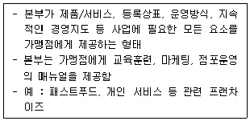
- 단순 재판매 프랜차이즈(straight distribution franchise)
- 사업형 프랜차이즈(business format franchise)
- 도매상-소매상 프랜차이즈(wholesaler-sponsored retailer franchise)
- 제조업자-소매상 프랜차이즈(manufacturer-sponsored retailer franchise)
- 사업자명 프랜차이즈(trade name franchise)
(정답률: 79%)
51. 소매점포가 고객의 지출에서 차지하는 자사의 점유율을 높이기 위해서 사용하는 방안으로 가장 옳지 않은 것은?
- 교차판매와 묶음판매를 통한 거래관계의 다변화
- 구매빈도, 구매금액 또는 양자를 함께 고려한 보상 프로그램의 제공
- 전환비용을 높이기 위한 포로형(captive) 충성도 프로그램의 제공
- 충성고객의 선호도를 고려한 맞춤화된 서비스의 제공
- 종업원과 고객 사이의 인간적 신뢰 관계 구축을 지원
(정답률: 47%)
52. 유통경로의 성과를 평가하기 위한 정량적 척도에 해당하지 않는 것은?
- 새로운 중간상들의 수와 비율
- 단위당 총 유통비용
- 손상된 제품의 비율
- 재고부족방지를 위한 관련 비용
- 역할에 대한 의견 일치의 정도
(정답률: 75%)
53. 촉진 일정계획은 기간별 예산 배정을 포함한다. 단기 캠페인 예산을 배정하는 기본적인 패턴은 집중형(blitz), 지속형(even), 파동형(pulse)으로 구분할 수 있다. 다음 중 캠페인 일정계획 패턴과 활용 방안의 연결이 옳지 않은 것은?
- 예산이 부족한 경우에는 집중형이 적합하다.
- 단기적 촉진 성과를 높이려면 집중형이 적합하다.
- 독점적 지위를 가진 성숙기 상품의 경우에는 지속형이 적합하다.
- 꾸준하게 기억을 보강시킬 필요가 있는 경우에는 지속형이 적합하다.
- 다양한 세분시장에 노출될 필요가 있는 경우에는 파동형이 적합하다.
(정답률: 39%)
54. 단위당 변동비가 500원인 상품을 단가 1,000원에 판매할 계획을 세웠으나 예상보다 판매가 부진하여 10% 할인한 가격에 판매하기로 결정했다. 다른 조건들이 모두 동일한 경우, 10% 가격할인에 따라 손익분기점은 어떻게 달라지는가?
- 20% 감소한다.
- 25% 감소한다.
- 20% 증가한다.
- 25% 증가한다.
- 목표이익을 모르므로 계산할 수 없다.
(정답률: 26%)
55. '더 비싼 가격에 더 많은 가치'라는 포지셔닝 제안을 사용하기에 가장 적합한 소매업태는?
- 아울렛
- 온라인 쇼핑몰
- 대형마트
- 편의점
- 보석전문점
(정답률: 74%)
56. 다음의 서비스 마케팅믹스 요소들 가운데 고객이 지각하는 접점 품질과의 관련성이 가장 낮은 것은?
- 안내데스크 직원의 친절도
- 가격 저렴성
- 서비스 절차의 신속성
- 주차 요원의 숙련도
- 점포의 아늑한 분위기
(정답률: 52%)
57. 서비스품질에 대한 다차원적인 평가에 있어 가장 보편적으로 활용되고 있는 SERVQUAL의 다섯 가지 구성요소에 해당되지 않는 것은?
- 유형성
- 신뢰성
- 수익성
- 확신성
- 공감성
(정답률: 61%)
58. 유통마케팅의 패러다임이 거래지향적 마케팅에서 관계지향적 마케팅으로 전환되면서 나타난 변화에 대한 설명으로 옳지 않은 것은?
- 범위의 경제에서 규모의 경제로 경제 패러다임이 변화되었다.
- 시장점유율보다 고객점유율에 초점을 맞춘다.
- 단기적 매출 증가보다 장기적 고객자산 증가를 중요시한다.
- 단품보다는 수명이 더 긴 상표에 대한 경험의 개선을 강조한다.
- 세분화 및 표적시장 선정보다는 바람직한 고객포트폴리오 구축에 힘쓴다.
(정답률: 64%)
59. 다음 글상자 안의 사례에서 적용된 마케팅전략을 가장 적절하게 표현한 용어는?
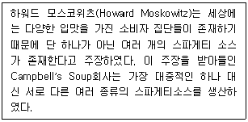
- 시장 전문화
- 세분시장 차별화
- 경쟁자 차별화
- 매스 마케팅
- 니치 마케팅
(정답률: 66%)
60. 다음 중 2차자료 조사방법에 해당되는 것은?
- 백화점 고객 표적집단면접
- 홈쇼핑 고객 심층면접법
- 대형마트 고객만족 전화조사법
- 편의점 판촉효과 실험조사법
- 유통업체 연감자료 조사법
(정답률: 66%)
61. 신제품 개발과정 중 반복구매력을 추정하는 단계는?
- 아이디어 개발
- 콘셉트 개발
- 콘셉트 스크리닝
- 시제품 평가
- 광고평가
(정답률: 57%)
62. 가격전략 중 상품 도입 초기에 많은 수의 구매자를 신속하게 끌어들여 높은 시장점유율을 확보하기 위해 저가격을 책정하는 전략은?
- 초기 고가격 전략
- 시장침투 가격전략
- 세분시장별 가격전략
- 동태적 가격전략
- 제품라인 가격전략
(정답률: 75%)
63. 확률표본 추출방법에 해당하지 않는 것은?
- 편의표본 추출법
- 단순무작위표본 추출법
- 층화무작위표본 추출법
- 군집표본 추출법
- 체계적 무작위 추출법
(정답률: 47%)
64. 제품수명주기상의 성장단계 경로전략으로 가장 적절한 내용은?
- 소수의 중간상에게만 제품을 공급
- 집중적 유통경로(Intensive Distribution Channel)선택
- 중간상의 수를 유지
- 중간상에 대한 지원 프로그램을 축소
- 미수금을 많이 가진 중간상과의 거래 중단
(정답률: 73%)
65. 유통경로상의 갈등에 대한 설명으로 옳은 것은?
- 대형마트와 전통시장간의 갈등은 수직적 갈등 유형에 속한다.
- 갈등은 성과에 항상 부정적인 영향을 미치므로 갈등이 발생하지 않도록 하는 것이 중요하다.
- 성과와의 관계에 따라 역기능적 갈등, 순기능적 갈등, 중립적 갈등으로 분류할 수 있다.
- 위협, 정보교환, 토론은 갈등의 수준을 높이고, 약속, 요청은 갈등의 수준을 낮춘다.
- 강압적 및 준거적 파워는 경로구성원간 갈등의 수준을 높인다.
(정답률: 51%)
66. ( )안에 알맞은 용어는 무엇인가?
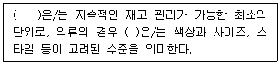
- 계열
- 카테고리
- 단품
- 상품 구색
- 상품 그룹
(정답률: 53%)
67. 다음 신문기사 내용 중 최근 우리나라 소매유통 변화 동향에 대해 기술한 것으로 옳지 않은 것은?
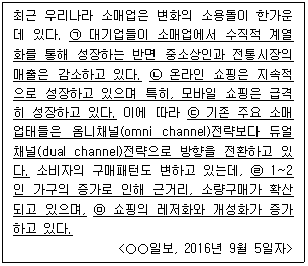
- ㉠
- ㉡
- ㉢
- ㉣
- ㉤
(정답률: 76%)
68. 소매업체에서 '고객들에게 적합한 상품을 기획하여 적합한 장소와 시점, 수량, 가격에 공급하는 것과 관련된 모든 활동'을 지칭하며, 상품구색, 진열, 재고관리, 가격설정 등을 포괄하는 용어는?
- 고객관계관리
- 판촉관리
- 머천다이징
- 공급망관리
- 제품관리
(정답률: 68%)
69. 다음에서 설명하는 레이아웃의 종류는?
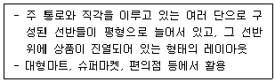
- 격자형 레이아웃
- 경주로형 레이아웃
- 자유형 레이아웃
- 수평형 레이아웃
- 수직형 레이아웃
(정답률: 70%)
70. 상품구성 방법 중 전문점 지향의 상품구성으로 옳은 것은?
- 좁고 깊은 상품구성
- 좁고 얕은 상품구성
- 넓고 깊은 상품구성
- 넓고 얕은 상품구성
- 참신성 위주 상품구성
(정답률: 72%)
4과목: 유통정보
71. 미국 국방성은 민간으로부터 필요한 군수 물자를 조달받기 위해 만든 전자입찰시스템인 CALS를 구축하여 활용하고 있다. 전자상거래를 거래 경제 주체에 따라 유형을 분류해 볼 때 이와 같은 사례에 가장 적합한 전자상거래 유형은?
- B2B
- B2G
- B2C
- G2C
- C2C
(정답률: 45%)
72. 바코드의 구성요소로 가장 거리가 먼 것은?
- 여백(Quite Zone)
- 심볼로지(Symbology)
- 바와 스페이스(Bar & Space)
- 검사문자(Check Digit)
- 설명부위(Interpretation Line)
(정답률: 44%)
73. 마크와이저가 정의한 유비쿼터스의 특징으로 가장 옳지 않은 것은?
- 네트워크로 연결된 세상
- 조용한 기술로 눈에 보이지 않는 컴퓨팅환경 구현
- 현실세계에서 어디서나 컴퓨터 사용이 가능한 환경
- 사용자의 상황에 따라 서비스가 맞추어 지원되는 환경
- 가상현실 공간으로의 확대
(정답률: 42%)
74. 빅데이터 수집은 분산된 다양한 소스로부터 필요로 하는 데이터를 수동 또는 자동으로 수집하는 과정이다. 조직 내외부의 정형적, 비정형적 데이터를 수집하게 되는데 이와 관련된 내용으로 가장 옳지 않은 것은?
- 로그 수집기 : 웹서버의 로그 수집, 웹로그, 트랜잭션로그, 클릭 로그, 데이터베이스의 로그 등을 수집
- 웹로봇을 이용한 크롤링 : 웹문서를 돌아다니면서 필요한 정보를 수집하고 이를 색인해 정리하는 기능을 수행하며 주로 검색엔진에서 사용
- 센싱 : 온도, 습도 등 각종 센서를 통해 데이터를 수집
- RSS 리더 : 사이트에서 제공하는 주소를 등록하면, PC나 휴대폰 등을 통하여 자동으로 전송된 콘텐츠를 이용할 수 있도록 지원
- Open-API : WWW를 탐색하는 프로그램, 방문한 사이트의 모든 페이지 복사본을 생성하는데 사용되며 검색엔진은 이렇게 생성된 페이지의 빠른 검색을 위해 인덱싱 수행
(정답률: 46%)
75. ( ) 안에 들어갈 용어로 옳은 것은?
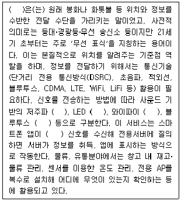
- 드론(Drone)
- 무인자동체
- 비콘(Beacon)
- 딥러닝(Deep-learing)
- NFC(Near Field Communication)
(정답률: 58%)
76. 복합운송은 운송수단간 결합 형태에 따라 구분되어 지는데, 화물차량을 철도차량에 적재하고 운행하는 방식에 해당되는 것은?
- Fishy Back System
- Sky-Rail System
- Piggy Back System
- Train-Ship System
- Birdy Back System
(정답률: 72%)
77. 조직의 데이터를 수집하고 관리하는 일련의 절차에 관한 사항으로 가장 옳지 않은 것은?
- 운영계층에서 매일 실시간으로 발생하는 데이터를 수집하고, 관리하는 거래처리정보시스템은 정확하고 구체적인 데이터를 다룰 수 있도록 구축되어야 한다.
- 각각의 운영DB로부터 발생하는 대량의 데이터를 ETL 도구를 활용하여 통합관리할 수 있도록 데이터웨어하우스를 구축한다.
- 중요한 데이터를 다른 사용자가 알아보지 못하도록 은닉하고, 변형시켜 조직 내부 구성원 중 인가받은 경우만 접근할 수 있도록 지원하는 기능을 정보세탁이라 한다.
- 데이터 마이닝은 원래의 자료 그 자체만으로는 제공되지 않는 정보를 추출하기 위해 다양한 기술을 활용하여 대량의 정보 속에서 일정한 경향과 관계를 찾아내고, 미래 행위를 예측하고 의사결정을 이끌어내도록 지원한다.
- W.H.Inmon에 의하면 DW를 경영자의 의사결정을 지원하는 주제 중심적(subject-oriented)이고 통합적(integrated)이며, 비휘발성(nonvolatile)이고, 시간에 따라 변화(time-variant)하는 데이터의 집합이라 정의하였다.
(정답률: 68%)
78. 엘리 골드렛의 제약조건이론에서는 '공정의 원자재 투입시점만을 지정하여 공정내 종속성과 변동성을 관리하는 기법으로, 전체 프로세스 중 가장 약한 것을 능력제약자원이라 지칭하고, 이 부분이 최대한 100% 가동을 할 수 있도록 공정 속도를 조절하여 흐름을 관리하는 기법'을 제시하고 있다. 이를 지칭하는 용어로 가장 적절한 것은?
- CCPM(Critical Chain Project Management)
- 쓰루풋(Through put)
- DBR(Drum-Buffer-Rope)
- DT(Data Transmission)
- JIT(Just-in-time)
(정답률: 50%)
79. 기업의 내외부적으로 산재해 있는 지식들을 부가가치 있는 지식으로 전환하기 위한 지식관리시스템의 개발 목적과 가장 거리가 먼 것은?
- 재사용 가능한 지식의 적시 제공에 따른 업무 생산성 향상
- 마케팅이나 영업 등과 관련된 전략 정보의 제공에 따른 조직의 역량 강화
- 정보 기술을 활용하여 형식지를 암묵지화하여 조직의 지식공유체계 구축
- 부가가치 창출의 잠재성을 가진 지식 축적에 따른 지식의 자산화
- 축적된 지식을 바탕으로 한 고품질 서비스 제공에 따른 기업의 경쟁력 강화
(정답률: 71%)
80. 비밀키 암호화 기술에 대한 설명으로 가장 옳은 것은?
- 비밀키 암호화방식은 암호화할 때에는 상대방의 공개키로 암호화하며, 복호화할 때에는 자신만 알고 있는 개인키를 이용하여 복호화를 실행한다.
- 비밀키 암호화방식은 암호화에 사용되는 키와 복호화에 사용되는 키가 달라 어느 한쪽이 가진 키를 이용하여 다른 쪽의 키를 쉽게 계산해 낼 수 없기 때문에 한쪽의 키를 공개할 수 있다.
- 비밀키 암호화 방식은 암호화되는 키의 크기가 공개키 암호화 방식보다 상대적으로 작아 암호화의 속도가 빠르다.
- 비밀키 암호화방식은 암호화에 사용되는 키와 복호화에 사용되는 키가 일치하지 않아 비대칭키 암호화 방식이라 한다.
- 비밀키 암호화방식은 복호화를 위해 키를 전송할 필요가 없어 대칭키에 비해 상대적으로 안전한 시스템이다.
(정답률: 36%)
81. 분산 데이터베이스 시스템에 대한 설명으로 가장 거리가 먼 것은?
- 지리적으로 분산되어 있는 데이터가 실제로 어느 위치에 저장되었는가를 의식할 필요가 없이 필요한 데이터를 검색, 갱신 등 사용할 수 있도록 지원한다. 물리적으로 분산되어있으나 논리적으로는 집중되어 있는 형태로 구성된다.
- 데이터 지역화를 통해 대규모의 데이터베이스를 사용하는데 있어 상대적으로 빠른 응답시간과 낮은 비용으로 공유할 수 있다는 장점이 있다.
- 데이터베이스 구축시 지역적으로 작은 단위로 나누어 물리적으로 분산시켜 구축하기 때문에 데이터베이스 설계가 상대적으로 매우 단순하고 구현기술이 간단하다는 장점이 있다.
- 데이터를 분산하여 배치하기 때문에 화재, 지진 등 재난재해 발생시에 전체를 한번에 잃을 수 있는 위험이 낮다는 장점이 있다.
- 대용량의 데이터를 처리하는 경우에는 여러 사이트에서 병렬로 수행할 수 있어서 데이터 처리 시간을 절약할 수 있다.
(정답률: 48%)
82. 의사결정 과정에서 합리적인 안을 선택하기 위해 고려해야 할 사항으로 가장 옳지 않은 것은?
- 정확한 사실 정보의 토대 위에서 이루어져야 한다.
- 공익에 저해되지 않으면서 조직의 성과를 극대화할 수 있는 방안을 창출해야 한다.
- 대안의 실행이 어렵거나 결과가 만족스럽지 못할 것으로 판단되어 그 대안을 취소하는 것은 합리적이지 못하다.
- 두 가지 이상의 경쟁 대안을 가지고 있는 것이 좋다.
- 과학적 접근이 필요하다.
(정답률: 66%)
83. 기업경영에서 정보자원관리의 필요성에 대한 요인으로 가장 옳지 않은 것은?
- 경영환경의 글로벌화
- 가속화되는 기술의 복잡성
- 보다 빠른 의사결정 요구
- 관세 장벽을 통한 보호무역주의 강화
- 경영관리의 복잡성 증대
(정답률: 63%)
84. 바코드의 단점을 보완하며 등장한 QR 코드에 대한 설명으로 가장 옳지 않은 것은?
- QR 코드 모델1과 모델2가 있으며, 현재 QR코드라하면 일반적으로 모델2를 가리킨다. 모델2 중 최대버전은 40(177x177셀)이고, 7089자의 숫자까지 취급할 수 있다.
- Micro-QR 코드는 위치찾기 심벌이 하나이며, 보다 더 작은 공간에 인쇄를 가능하게 해 준다.
- Frame QR은 코드안에 자유롭게 사용할 수 있는 캔버스 영역을 가진 QR코드이다. 캔버스 부분에 문자나 화상을 넣을 수 있다.
- iQR코드는 데이터 인식 제한 기능을 가진 코드이다. 개인정보나 사내 정보 관리 등에 활용할 수 있다. 겉모양은 보통 QR 코드와 같다.
- QR 코드는 네 모서리 중 세 곳에 위치한 위치 검출 패턴을 이용해서 360도 어떤 방향에서든지 데이터를 읽을 수 있다.
(정답률: 41%)
85. 다음에서 설명하는 SCM의 추진유형으로 가장 옳게 짝지어진 것은?
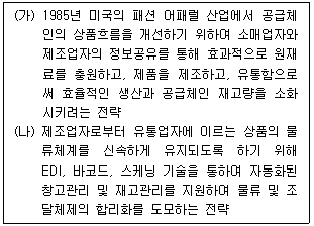
- (가) 효율적 소비자 반응(ECR)
(나) 신속한 보충(QR) - (가) 신속한 보충(QR)
(나) 크로스도킹(CD) - (가) 공급자 주도 재고관리(VMI)
(나) 크로스도킹(CD) - (가) 효율적 소비자 반응(ECR)
(나) 공급자 주도 재고관리(VMI) - (가) 공급자 주도 재고관리(VMI)
(나) 신속한 보충(QR)
(정답률: 56%)
86. 전통적 상거래와 비교하였을 때, e-비즈니스 시대에서의 구매-제조-유통-판매-서비스로 이어지는 비즈니스의 전 과정에서 나타나는 특징으로 가장 옳지 않은 것은?
- 기존의 상거래에 비해 단축된 혹은 확장된 유통채널을 통해 소비자들에게 보다 저렴한 가격으로 상품을 공급할 수 있다.
- 시공간의 벽이 사라지게 되어 인터넷 기반으로 언제 어디에서든지 정보를 수집하고 상품거래를 할 수 있다.
- 기업의 직접적인 시장조사를 통하여 얻은 고객의 수요정보를 바탕으로 하여 기업은 일방향적인 마케팅 활동을 추진할 수 있다.
- 네트워크를 통한 가상적인 판매활동의 증가로 실물 세계의 판매거점의 필요성이 점점 감소하고 있다.
- 글로벌시장으로 구매범위가 확대됨에 따라 소비자의 제품 선택의 폭이 확대되고 있다.
(정답률: 65%)
87. 암묵지에 대한 내용으로 가장 옳지 않은 것은?
- 주관적인 지식
- 경험적인 지식
- 초 언어적 지식
- 명시적인 지식
- 직관적인 지식
(정답률: 72%)
88. Wiig(1993)의 지식경영 모델에서 정의한 지식의 유형에 대한 설명으로 가장 옳지 않은 것은?
- 사실지식 : 전형적으로 직접 관찰하고 검증 가능한 콘텐츠 등을 의미한다.
- 전문지식 : 지식근로자들에 의해 독점적으로 보유되는 지식을 의미한다.
- 일반지식 : 일반적으로 명시적이라기 보다는 암묵적인 형태를 가지는 것으로 일상생활에서 무의식적으로 사용되는 지식을 의미한다.
- 기대지식 : 아는 자의 판단, 가정 등을 의미하는 것으로, 의사결정에 이용되는 직관, 예감, 선호도, 경험적 판단 등을 들 수 있다.
- 방법지식 : 추론, 전략, 의사결정 등에 관한 방법들을 다루는 것으로, 과거의 실수로부터 교훈을 도출하는 방법이나 추세분석을 기반으로 예측을 하는 방법 등을 들 수 있다.
(정답률: 39%)
89. 매스마케팅과 관계마케팅간의 비교 설명으로 가장 옳지 않은 것은?
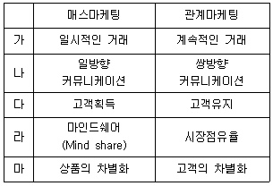
- 가
- 나
- 다
- 라
- 마
(정답률: 65%)
90. 인터넷 시장 세분화를 위해서는 인구통계적, 사회심리적, 행동분석적 및 지리적 변수를 활용하고 있다. 다음 보기 중 구매 행동 변수에 속하는 것은?
- 라이프스타일
- 교육 수준
- 상표 충성도
- 개성
- 종교
(정답률: 36%)